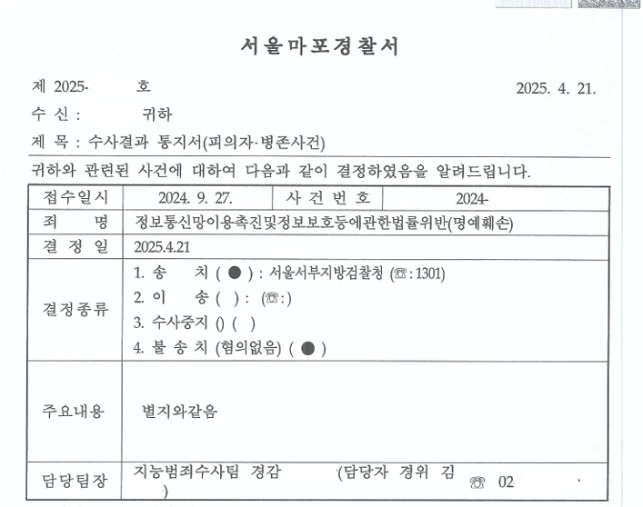

인스타그램에 전연인에 대한 비방글 게시하여 모욕 및 정보통신망법위반(허위사실적시 명예훼손)으로 고소당한 사건 검찰 불기소로 방어
[모욕·정보통신망법위반(허위사실적시 명예훼손) 혐의]
경찰단계 일부 불송치, 검찰단계 최종 혐의없음
- 사건개요
의뢰인은 전 연인과 약 1년간 교제한 뒤 결별하였고, 결별 후 상당한 시간이 지난 상황이었습니다.
그러던 중 의뢰인은 전 연인이 자신의 가까운 지인에게 접근하여 호감을 표시하였다는 사실을 알게 되었고, 이에 큰 배신감과 불쾌감을 느꼈습니다.
의뢰인은 감정이 격해진 상태에서 인스타그램에 전 연인의 인적사항을 직접 드러내지 않은 채 관련 내용을 게시하였습니다.
그러나 상대방은 해당 게시글에 모욕적인 표현과 사실이 아닌 내용이 포함되어 있다고 주장하며, 의뢰인을 모욕 및 정보통신망법위반, 즉 허위사실적시 명예훼손 혐의로 고소하였습니다.
- 핵심 쟁점 및 법률사무소 준일의 조력
이 사건의 핵심은 단순히 게시글에 일부 감정적 표현이 포함되어 있었다는 점이 아니라, 해당 표현이 형사처벌의 대상이 되는 모욕 또는 허위사실적시 명예훼손에 해당하는지 여부였습니다.
법률사무소 준일의 차현준 변호사는 경찰단계부터 사건을 맡아 피의자 조사에 동석하고, 게시글의 작성 경위와 전체 맥락을 정리한 변호인의견서를 제출하였습니다.
특히 게시글이 작성된 배경, 상대방을 특정할 수 있었는지, 게시글의 공개 범위, 표현의 전체 취지, 허위사실 적시 여부를 종합적으로 살펴야 한다는 점을 강조하였습니다.
또한 의뢰인이 상대방의 실명이나 구체적인 인적사항을 공개한 것이 아니고, 비공개 SNS 공간에서 일시적 감정을 표현한 측면이 강하다는 점을 소명하였습니다.
나아가 일부 표현은 구체적인 사실의 적시라기보다는 감정적 평가 또는 의견표현에 가깝고, 전체 맥락상 상대방의 사회적 평가를 저하시키려는 목적이 있었다고 단정하기 어렵다는 점을 적극적으로 주장하였습니다.
그 결과 경찰단계에서 문제 된 여러 표현 중 상당 부분에 대하여 불송치 결정을 이끌어냈습니다.
이후 일부 혐의가 검찰로 송치되었으나, 법률사무소 준일은 검찰단계에서도 추가 변호인의견서를 제출하여 남은 쟁점에 대해 재차 방어하였습니다.
- 결과 및 의의
최종적으로 검찰은 송치된 혐의에 대해서도 모두 혐의없음 처분을 하였습니다.
이 사건은 SNS 게시글이 형사문제로 번진 경우에도, 작성 경위와 표현의 맥락, 특정성, 모욕성, 허위사실성, 비방 목적을 어떻게 정리하느냐에 따라 결과가 달라질 수 있음을 보여주는 사례입니다.
감정적인 표현이 포함되어 있더라도, 그것만으로 곧바로 모욕죄나 명예훼손죄가 성립하는 것은 아닙니다.
법률사무소 준일은 경찰단계부터 검찰단계까지 일관된 방어전략으로 의뢰인의 형사책임이 인정되지 않도록 조력하였고, 최종적으로 전부 혐의없음이라는 결과를 이끌어냈습니다.
※ 구체적인 사건은 사실관계에 따라 달라질 수 있습니다.

 한석일 대표변호사
한석일 대표변호사